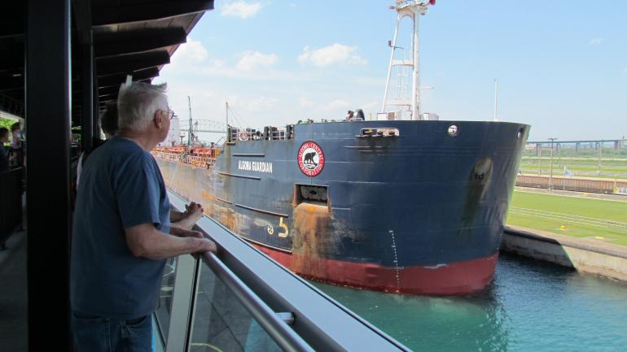

My first day in Sault Ste Marie, Ontario I arrived around 8:00am and checked into my hotel downtown called the Holiday Inn Express. I wanted to get right into my adventure so I reviewed my to-do list I made before coming.
Considering I was checked in right on the boardwalk, I decide to take my continental breakfast with my coffee and enjoy the morning sun on a nice walk. This walk lead me right past the mall and the Mill Market area where I decided to pick up some things to make a pinic lunch. Continuing my walk down towards the local canal. This canal leads right into White Fish Island! After taking some time to watch the water levels rise and lower to allow boats to cross the channel I continued my walk into White Fish Island where I set up a blanket for a nice pinic lunch along St. Mary's River.
After my lunch I mosied my way back to the hotel to change. I decided after a long day of walking I would eat some supper at Ernie's. A nice little restuarant with a lot of history in this town. Although times have changed for it, it still holds quite the esteem within the community and after eating here I can see why! To end my day, I decided to see a movie at the Galaxy Cinemas, located in the mall, then I headed over to Outspoken Brewery to meet some locals and get advice on my next few days out.
After meeting some new friends and staying out a little later than expected, I made my way back to the hotel to get some sleep for my big day tomorrow!
Coming tomorrow